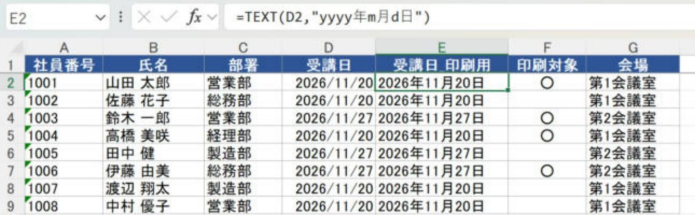
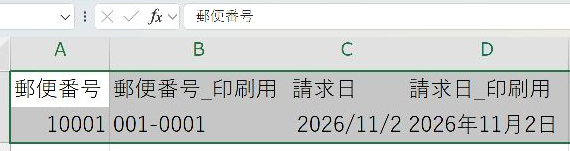
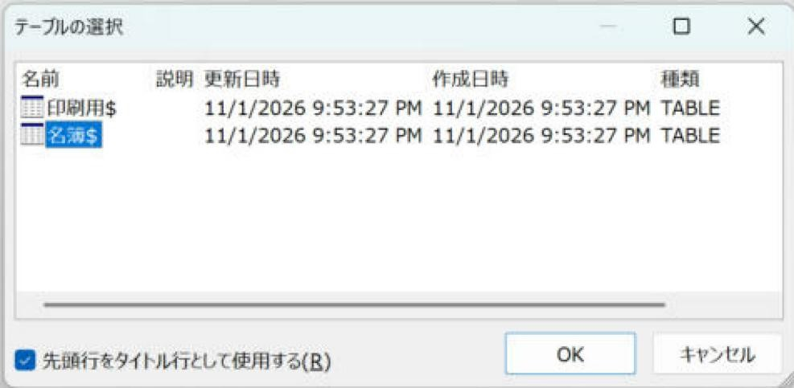
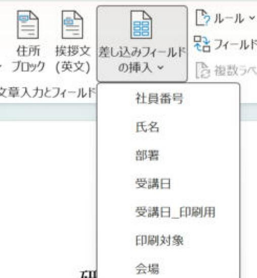

Word差し込み印刷で失敗しにくいExcel住所録の作り方
入力用の列と印刷用の列を分け、Wordにつなげる住所録を用意します。
入門（Lv.1）
- 見出しを作る
- 1行1件で入力
- 印刷用列を作る
- Wordで確認
手順の目次を開く
ゴール：Wordで選ぶだけの住所録を作ります
Excelは住所録、Wordは文面と印刷レイアウトに使います。最初に1行1件・1列1項目・1行目は見出しの表を作ると、Word側で複雑な設定を減らせます。
手順1：新しいシートの1行目へ見出しを入れる
- Excelの新しいシートを開き、シート名を「住所録」にします。
- A1から「宛先ID」「氏名」「郵便番号」「住所1」「住所2」「会社名」「敬称」の順に入力します。
- 2行目以降へ1人ずつ入力します。建物名がない人の住所2は空欄にします。
- 途中へ「営業部」などの見出し行や合計行は入れません。部署別に分けるなら「部署名」列を追加します。

手順2：番号と日付の持ち方を決める
| 項目 | 入力前の設定・入力例 | 理由 |
|---|---|---|
| 郵便番号・電話番号 | セルの表示形式を「文字列」にしてから入力。例：001-0001 | 先頭の0とハイフンを保持します。 |
| 日付 | 2026/11/2のような日付値 | 期間抽出・日付順の並べ替えに使えます。 |
| 氏名・住所 | 文字列。住所1と建物名の住所2を分ける | Wordで改行位置を決めやすくなります。 |
| 敬称 | 様／御中を必要な宛先に入力 | Wordへ列を差し込めば例外を管理しやすくなります。 |
数値で入力して消えてしまった先頭ゼロは、後から「文字列」に変えるだけでは戻りません。郵便番号は7桁という前提を確認して印刷用列で補います。電話番号など桁数が一定でない番号は元資料と照合します。
手順3：必要な項目だけ印刷用列を追加する
元の値は計算用に残し、右側へ印刷用の列を足します。例えばC列がハイフンなし郵便番号、H列が案内日なら、次の列を作ります。
| 新しい見出し | 2行目に入れる式 | 結果例 |
|---|---|---|
| 郵便番号_印刷用 | =IF(C2="","",TEXT(C2,"000-0000")) | 001-0001 |
| 案内日_印刷用 | =IF(H2="","",TEXT(H2,"yyyy年m月d日")) | 2026年11月2日 |
- 新しい列の1行目へ見出しを入力します。
- 2行目へ式を入力し、Enterを押します。参照するセルの位置は自分の表に合わせます。
- セル右下の小さな四角を最終データ行までドラッグし、式を下までコピーします。
- 先頭ゼロのある行、空欄の行、最終行で結果を確かめます。
郵便番号が最初から「001-0001」の文字列なら、その列を直接使えます。印刷用列は、表示を変える必要がある項目だけに作ります。

手順4：接続前に表を点検して保存する
- 見出しが空の列や、同じ名前の列がないか確認します。
- 結合セル、途中の空白行、表の下のメモを除き、表の範囲を明確にします。
- 「印刷対象」列を使うなら「○」などの入力ルールをそろえます。Excelのフィルターで非表示にしただけでは、Wordの対象者を限定したことにはなりません。
- 「住所録.xlsx」など内容が分かる名前で保存し、Wordに接続する前にExcelを閉じます。

手順5：Word側で見出しと人数を照合する
- Excelの表を保存し、Wordの新しい文書を開きます。
- 「差し込み文書」→「宛先の選択」→「既存のリストを使用」を押し、保存したExcelファイルを選びます。
- 「テーブルの選択」で使うシート名を選びます。1行目が見出しなら「先頭行をタイトル行として使用する」をオンにして「OK」を押します。
- 「アドレス帳の編集」を開き、氏名・件数・空白の行がないことを確認して「OK」を押します。
郵便番号や日付は「_印刷用」の列を挿入します。表にない列名が表示される場合は、別ファイル・別シートを選んでいないか確認します。

次に読む記事
文書を1人ずつ作るならレターの基本手順、シールへ印刷するならラベルの基本手順へ進みます。印刷対象を絞るときは対象者だけを出す2つの方法を使います。